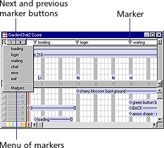
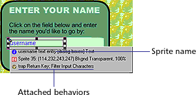
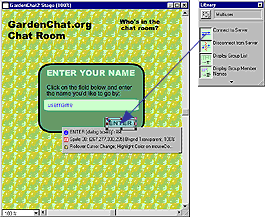
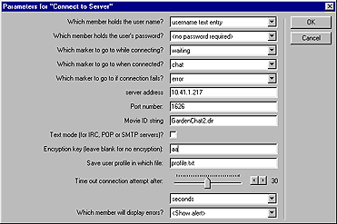
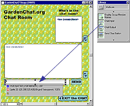

Using Director > Director 8 Tutorial > Add multiuser chat functionality to GardenChat
Using Director > Director 8 Tutorial > Add multiuser chat functionality to GardenChat |
Add multiuser chat functionality to GardenChat
To add another layer of functionality to your Web site, you're going to use Director's multiuser behaviors to create chat capabilities. A group of your GardenChat users will then be able to discuss soil conditions, the best fertilizer, and the weather simultaneously and in real time.
If you've never used Director's multiuser behaviors, you'll see how simple it is to create a chat in about 5 minutes.
To build a chat, you launch a local server application that supports the chat, and you create a Director movie designed to communicate with the server. Then you create a Shockwave version of the movie.
Launch the Shockwave Multiuser Server and determine the server IP address
The Multiuser Server is included in the Director 8 default installation.
1 |
In your Director 8 application folder, open the Shockwave Multiuser Server 2.1 subfolder, and double-click the MultiuserServer icon. |
The server launches. |
|
2 |
To determine the server's IP address and see additional information about the server, choose Status > Server. |
3 |
Write down the server IP address or copy it to the Clipboard. You will need this information later. |
1 |
In Director, choose File > Open. |
2 |
Browse to your Director 8 application folder. Open the Learning folder and the My Tutorial folder, and then open Chat.dir. |
If you were to create this chat movie from scratch, you would place the text, fields, and artwork on the Stage. You could also use behaviors to add special effects. Most of this work is already completed for you. You will add the behaviors to your template to give the chat its multiuser functionality.
In the Score, notice that six markers identify key scene changes.

Markers can identify a specific frame, let you specify a frame to which to take your user, and so on. Now you will use markers to go to the beginning of a scene.
Click Next Marker twice to move the playback head to the login marker in frame 15.
The Sprite Overlay displays important information on the Stage about a selected sprite, including the sprite's name and the name of behaviors attached to the sprite. You can click the icons on the overlay to view different properties in the Property Inspector.

If the Sprite Overlay is not visible when you select a sprite, choose View > Sprite Overlay > Show Info.
Note: As you complete the following steps to attach behaviors, make sure you drag the behavior to the specified sprite and not to a background sprite, which would have a different name. Use the sprite name in the Sprite Overlay to assist you.
Add the Connect to Server behavior
The Connect to Server behavior connects your user to the Multiuser Server. You attach the Connect to Server behavior to the sprite your user will click to establish a server connection. In this tutorial, you will attach the Connect to Server behavior to the Enter sprite.
1 |
If the Library window is not open, choose Window > Library Palette. |
2 |
From the Library List pop-up menu, choose Internet > Multiuser. |
3 |
Drag the  |
4 |
Set the following parameters: |
In the Which Member Holds the User Name pop-up menu, choose Username Text Entry. |
|
Accept the default setting of the Which Member Holds the User's Password pop-up menu. |
|
In the Which Marker to Go to When Connecting pop-up menu, choose Waiting. |
|
In the Which Marker to Go to When Connected pop-up menu, choose Chat. |
|
In the Which Marker to Go to If Connection Fails pop-up menu, choose Error. |
|
In the Server Address field, enter the server IP address that you recorded from the server application window. |
|
Verify that 1626 is in the Server Port Number field. |
|
Verify that the name of the movie is in the Movie ID String field. |
|
Accept the other default settings by clicking OK.
 |
|
Now you can add the Chat Input behavior to the Chat Input text sprite. Chat Input is the behavior you attach to the text or field sprite in which your user enters information.
1 |
Click Next Marker twice to go to frame 45. |
2 |
From the Library palette, drag the  |
3 |
Accept the default parameters, and then click OK. |
You attach the Chat Output behavior to the text or field sprite that will display the current chat text.
1 |
From the Library palette, drag the |
2 |
Accept the default parameters by clicking OK. |
Add the Send Chat Button behavior
You attach the Send Chat Button behavior to the sprite your user clicks to send the chat input text to the Multiuser Server, which then sends the text to chat participants. The Send Chat Button behavior includes a parameter that lets you select the sprite containing the information to send.
1 |
Drag the |
2 |
In the pop-up menu, select 20-Member 'Chat Input Text,' and then click OK. |
Add the Disconnect from Server behavior
The Disconnect from Server behavior ends the server connection when your user has finished chatting.
To add the Disconnect from Server behavior, drag it to the Exit sprite on the Stage.
The Disconnect from Server behavior does not require additional parameters.
You've finished adding chat functionality to the movie.